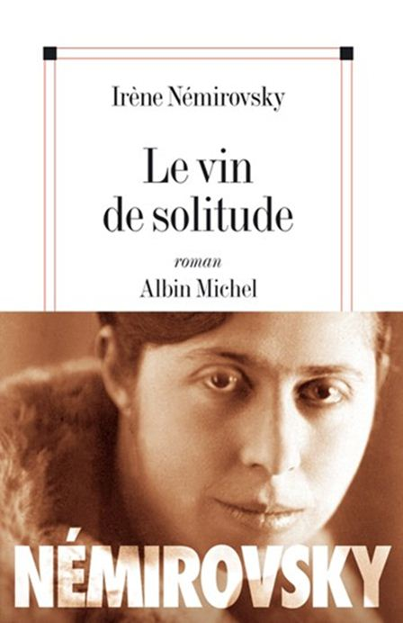
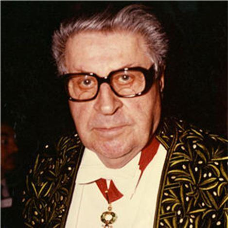
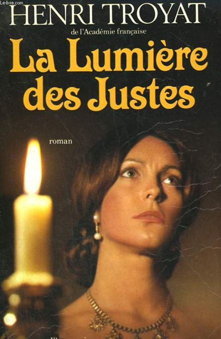

« À tout seigneur, tout honneur » c’est aujourd’hui de deux écrivains nés sous l’Empire Russe et de langue française que je parlerai. Tous deux ont fui la Russie lors de la révolution de 1918 et la littérature française ne s’en plaint pas ! Il s’agit respectivement d’Irène Némirovsky (née à Kiev) et d’Henri Troyat (né à Moscou). Curieusement, il y a un autre point commun dans les écrits dont je parle aujourd’hui : c’est la réquisition d’une maison française pour loger des officiers d’occupation. Le point de départ dans Le vin de solitude de Némirovsky se situe dans l’Empire Russe, dans La lumière des justes de Troyat le point de départ est Paris. J’ai découvert ces deux auteurs il y a quelques années. Pour la première ce fut un ami qui m’en conseilla la lecture, pour le second, une vieille édition au papier jauni attira mon attention lors du débarras d’une bibliothèque. Il est bien évident que je n’ai pas lu la totalité des ouvrages de ces deux auteurs, ni leur biographie détaillée. En ce qui concerne Henri Troyat, son œuvre est immense, pas moins d’une centaine d’ouvrages ! Il fut élu à l’Académie Française en 1959. Ce n’est donc pas une analyse littéraire comparée que je propose ici, mais juste une sensation de lecteur, un plaisir à partager.
De Némirovsky je parlerai de ses ouvrages « Le vin de Solitude », un roman autobiographique et de « Suite Française »pour lequel, on lui a décerné, bien que décédée, le prix Renaudot en 2004.
Irène Némirovsky est née en 1903 à Kiev, elle mourut déportée à Auschwitz en août 1942. Fille d'un banquier juif d'Odessa, Irina Némirovsky est élevée par deux gouvernantes, sa mère ne s'étant jamais vraiment intéressée à elle. Une Française, Mademoiselle Rose fera du français sa deuxième langue maternelle. Après la disparition de cette dernière, c’est une anglaise qui continuera sa formation. Irène parle ainsi le russe, le français et l'anglais. La famille Némirovsky vécut à Kiev jusqu’en 1914. À partir de cette date les Némirovsky s'installèrent à Saint-Pétersbourg. En 1918, la famille fuit la révolution russe pour se réfugier en Finlande, à Helsinki et en juillet 1919, elle s’installe en France.
« Le vin de solitude » (édition Albin Michel, Le livre de poche.) est donc un roman un peu daté mais très bien écrit. C’est un ouvrage en grande partie autobiographique où l’on suit une famille de la moyenne bourgeoisie juive d’Ukraine à Paris. Cette famille va devenir riche, très riche. Elle s’installera dans la grande bourgeoisie financière, mais elle devra fuir, parce que riche, puis parce que juive. L’argent coule à flots, il rentre et ressort dans la salle à manger par les couverts en argent, rachetés aux aristocrates ruinés. L’argent circule dans les plats en faïence et les conversations des adultes sans scrupules qui ne vivent que pour lui. Des millions, des paquets d’actions, des mines qu’on rachète, des milliards. Au milieu de tout ça une petite fille avec sa sensibilité de petite fille et sa gouvernante, Mademoiselle Rose, qui ne lui parle qu’en français. Gouvernante congédiée, devenue plus ou moins folle et qu’elle perdra dans une scène poignante, dans une rue en guerre le long de la Neva, dans un brouillard épais. Disparition de guerre ou mort voulue ? Elle cherche désespérément Mademoiselle Rose, happée par le brouillard et qui lui a lâché la main. Elle se heurte à un milicien ivre à qui elle demande de l’aide, mais il la repousse...
« Elle ne voyait rien ; le brouillard l’entourait de tous côtés ; il lui sembla apercevoir au loin une ombre ; elle se précipita vers elle, mais c’était un milicien qui la repoussa. Elle cria : - Au secours ! Aidez-moi !...N’avez-vous pas vu passer une femme qui allait par ici ? Mais le milicien était ivre, et une voix d’enfant appelant au secours était chose commune en ce temps là. »
Hélène apprendra le lendemain que Mademoiselle Rose, transportée à l’hôpital, était morte d’un arrêt du cœur. Des phrases simples qui semblent jaillir naturellement sous la plume, des descriptions très sobres sans fioritures inutiles ajoutent au plaisir de la lecture.
Des relations mère-fille plutôt tendues, des phrases surprenantes mais peut-être vraies, c’est tout ce qu’Hélène eut comme éducation de la part de sa mère, infidèle et volage :
« Enfant, crois-moi, on n’aime pas un homme pour lui, mais contre une autre femme... »
On suit Hélène jusqu’à sa majorité, elle quitte le foyer familial après la mort du père. Père, joueur et dépensier, qui lui avait fait découvrir les casinos, oubliant même une fois de la récupérer. Mais un père volatile, qui n’incarnera jamais Le père et qu’elle ne cessera jamais d’aimer. Une bouée, un symbole mort, à laquelle elle essaie désespérément de s’accrocher. Pas de la grande aventure mais une vie faite d’aventures, de déplacements, de casinos, de jeu, de calculs, de chagrin et de solitude au milieu d’une famille toujours proche et pourtant si lointaine. On tient le livre, ni pour l’intrigue ni pour le grand style – Le vin de solitude n’a pas la plénitude de l’écriture que possède Suite Française - mais pour le plaisir de lire une bonne écriture, parfois surprenante :
« ....sans doute il est facile de renoncer, maintenant que j’ai virtuellement obtenu ce que je voulais. »
Rien que ce virtuellement utilisé en 1935 vaut le détour. Une bonne révision du passé simple, c’en est presque vexant, et un moment de plaisir triste de 280 pages.
Avec Suite française. (Prix Renaudot 2004, en folio chez Denoël) c’est à une promenade dans l’incroyable cataclysme de l’exode de juin 1940 que nous invite cette fois Irène Némirovsky. Tout à la fois un roman intimiste et social cette « Suite française » est bouleversante. L’exode y est très bien décrit, mais plus encore que les personnages, très nombreux, qui composent la Suite. On retrouve dans la partie deux, (Dolce) une histoire croisée entre un officier allemand logeant dans une maison française et la sous-maîtresse de la maison qui a un mari prisonnier en Allemagne. La vraie maîtresse de maison étant la belle-mère. La complexité, l’ambiguïté de la relation entre les deux femmes dont le support, le référent mari/fils est absent, y est décrit d’une manière précise qui prend les tripes avec des mots simples, des mots de tous les jours. Un autre homme loge en la demeure : un officier allemand, une partie de la maison ayant été réquisitionnée pour le loger. Des chassés-croisés de sentiments, de conflits personnels, en référence à ce mari absent, à ce dont il est le porteur et dont l’absence même est la signature, éclatent dans un tourbillon de mots cristallins et directs. Des répulsions et des attirances amoureuses envers l’envahisseur. Des détails riches et documentés sur la vie quotidienne de l’Occupation. Bref de la très bonne littérature qui vaut aussi par la personnalité de l’auteur : elle fut arrêtée, déportée à Auschwitz d’où elle ne revint jamais. La correspondance entre elle et son mari (également mort dans un camp) et les diverses tentatives épistolaires de ce dernier pour essayer d’éviter le pire sont plus que poignantes : à peine supportables. -Ces correspondances sont reproduites dans l’ouvrage - Si les larmes ne viennent pas, c’est qu’on a conscience que la connerie humaine est incommensurable, immense. L’énorme bêtise à front de taureau... (Baudelaire)
Henri Troyat est né le 1er novembre 1911 à Moscou, il mourut à Paris le 02 mars 2007, il est un écrivain de langue française. Pour H. Troyat je parlerai de La Lumière des Justes (éd. Flammarion.) une suite en cinq volumes publié de 1959 à 1963. Les Compagnons du coquelicot (tome I, 1959) La Barynia (tome II, 1960) La Gloire des vaincus (tome III, 1961) Les Dames de Sibérie (tome IV, 1962) Sophie ou la Fin des combats (tome V, 1963)
Il y en a donc cinq volumes et c’est d’un académicien. Parfois les académiciens écrivent bien, mais il leur arrive souvent d’écrire en douze tomes, d’une écriture indigeste, la vie d’une famille de viticulteurs de l’Hérault sur sept générations.
Ce qui, on s’en doute, emballe les jeunes lecteurs ! Au départ, on se dit « il me faudra du courage pour aller au bout » mais on est agréablement surpris. Ça glisse d’une plume académique mais légère, comme un traineau sur l’immensité neigeuse de la campagne moscovite. Une écriture raisonnable dans des descriptions sobres mais palpables dans lesquelles on se laisse vite prendre. Les phrases n’excédent pas cinq lignes, mais toutes sonnent juste. On touche des yeux les étendues du désert sibérien autant que le Paris occupé par les russes. On a mal au dos à force de voyager en troïka, mais on est ravi du son des clochettes qui tintent et s’entendent. Troyat possède la magie du descriptif réaliste : s’il écrit « il fait moins quarante », on cherche un lainage pour s’en couvrir !
L’histoire en elle-même ? Un amour entre un jeune officier russe des troupes d’occupation et une aristocrate française. L’héroïne, Sophie, est la fille de la maison réquisitionnée pour loger Nicolas, officier d’occupation. Elle le déteste cordialement mais ouvertement. Lui, en est amoureux dès le départ. Leur amour les conduira de Paris en Russie, de Russie en Sibérie et retour partiel à Paris dans le dernier opus. On pourrait n’en retenir que le roman à l’eau de rose pour jeune fille en attente du bal des débutantes, mais il y a plus que cela. La psychologie des personnages, la vie parisienne du dix-neuvième siècle, la condition des moujiks dans la campagne russe, la vie des aristocrates aussi bien russes que français à la même époque.
Le ferment des idées libérales et révolutionnaires de ce siècle, annonçant les bouleversements à venir. L’utopie, le rêve des « décembristes » qui finiront en Sibérie et où l’on découvre que les « messieurs, » les politiques, n’avaient pas tout à fait les mêmes conditions de détention que les droits communs.
Une véritable peinture sociale de cette époque de la Russie et de la France, les deux patries de l’auteur. Je me suis laissé surprendre à lire le dernier volume d’une seule traite, vous dire si c’est prenant ! Même si c’est un peu « vieillot », mais l’écriture aussi à ses époques. On ne s’ennuie pas en suivant Sophie et Nicolas dans leurs domaines, leurs châteaux, leurs différents, leurs séparations, leurs retrouvailles. Une histoire d’amour dans une tragédie politique tout à fait lisible sans qu’il neige dehors par moins quarante. Après avoir lu Troyat on à l’impression de comprendre un peu mieux l’âme russe, mais n’est-ce pas une illusion ? Sophie, partageant le quotidien d’un véritable aristocrate russe, crut, elle aussi, comprendre l’âme russe. C’est ce qui l’a perdue...
Partager cette page